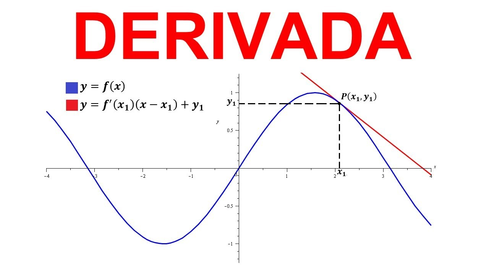
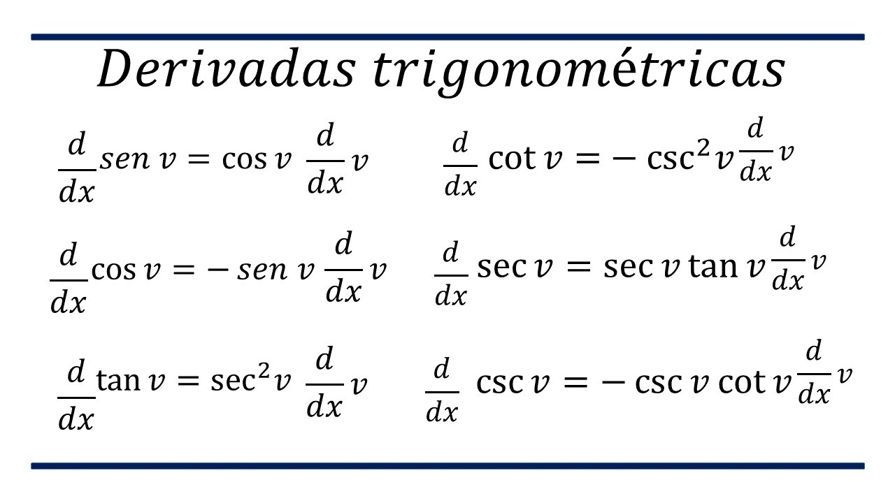
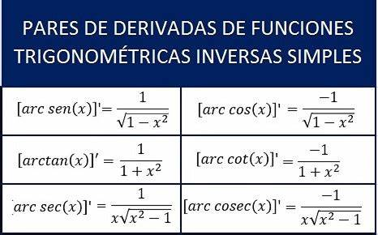

Definicion
La derivada de una función es la razón de cambio instantánea con la que varía el valor de dicha función matemática, según se modifique el valor de su variable independiente. En otras palabras, la derivada mide cómo cambia una función en un punto específico cuando la variable independiente se modifica infinitesimalmente. Este concepto es fundamental en el cálculo diferencial y se utiliza para analizar la velocidad, la pendiente de una curva y los valores máximos y mínimos de una función.
Geométricamente, la derivada se corresponde con la pendiente de la recta tangente a la gráfica de la función en un punto dado. La recta tangente es la mejor aproximación lineal de la función alrededor de ese punto.
Para calcular la derivada de una función, se utiliza el límite de la rapidez de cambio media de la función en un intervalo cada vez más pequeño alrededor del punto de interés. En resumen, la derivada nos permite entender cómo cambia una función en un instante específico y es esencial en el estudio de fenómenos como el movimiento, la tasa de crecimiento y la optimización.
Derivadas algebraicas
En el formulario de derivadas, encontrarás las derivadas de funciones elementales, como las algebraicas, trigonométricas, exponenciales, logarítmicas y la inversa de la derivada. Este recurso te facilitará resolver rápidamente ejercicios de derivadas y te permitirá visualizar los procedimientos en la resolución de derivadas compuestas1. A continuación, presento algunas fórmulas y reglas de derivación algebraica:

Trigonometricas Directas
Las derivadas de funciones trigonométricas directas son las tasas de cambio de las funciones trigonométricas básicas con respecto a la variable independiente. Aquí están las fórmulas para las derivadas de las funciones trigonométricas más comunes:

Trigonometricas inversas
Las derivadas de funciones trigonométricas inversas son un tema importante en cálculo diferencial. Estas derivadas se aplican a las funciones trigonométricas inversas, también conocidas como funciones de arco o funciones antitrigonométricas.

logaritmicas y exponenciales